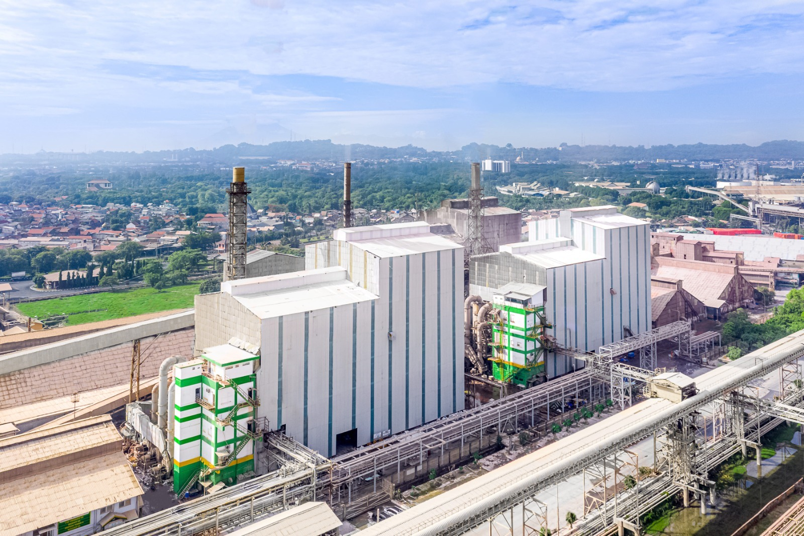
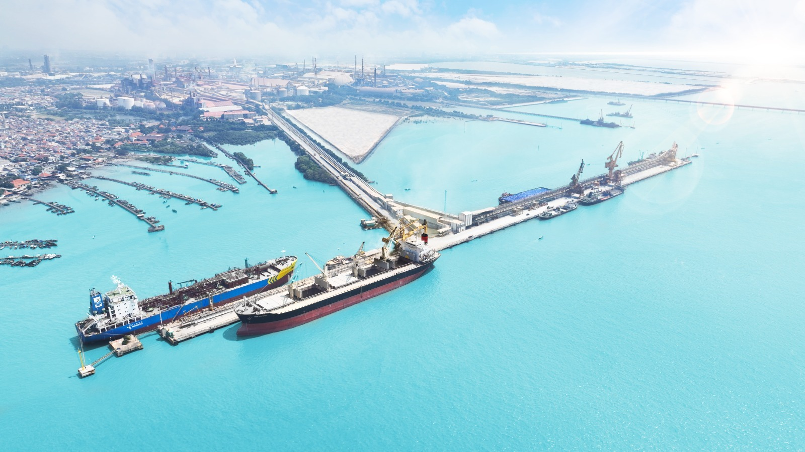
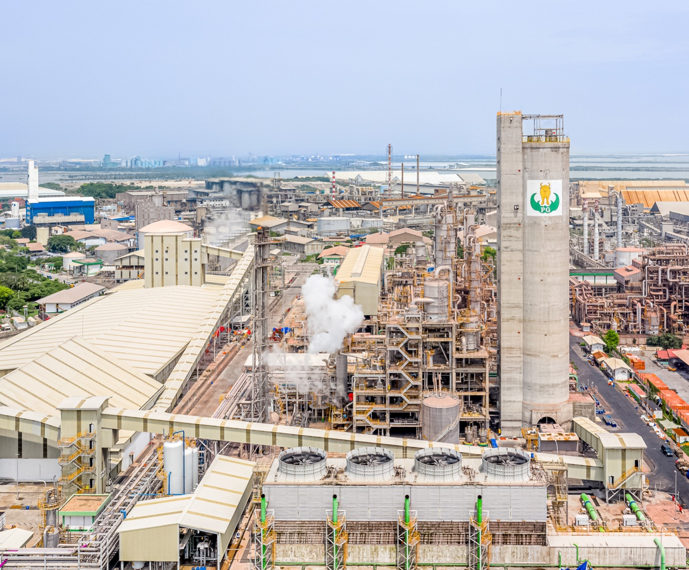
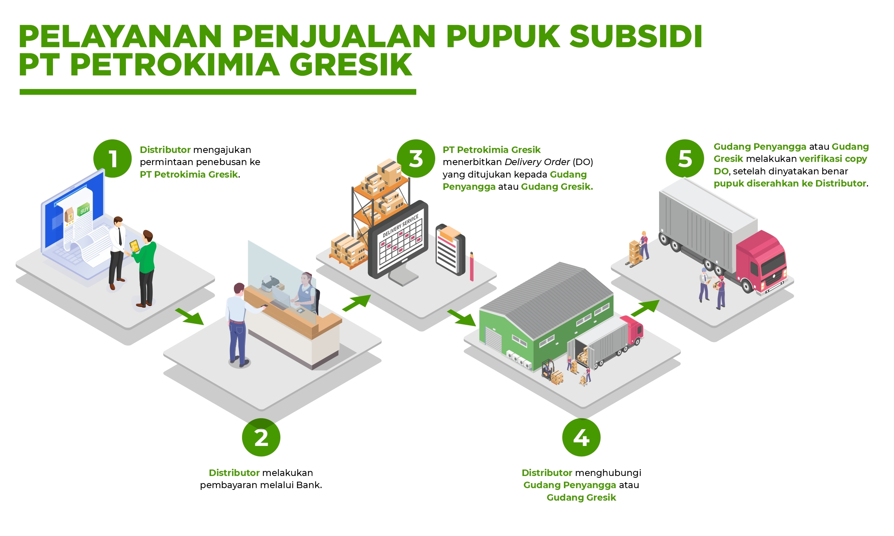
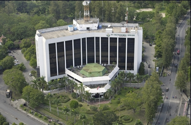
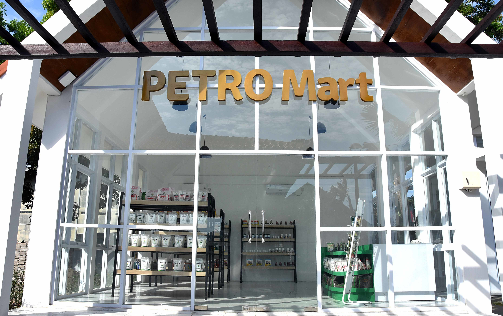
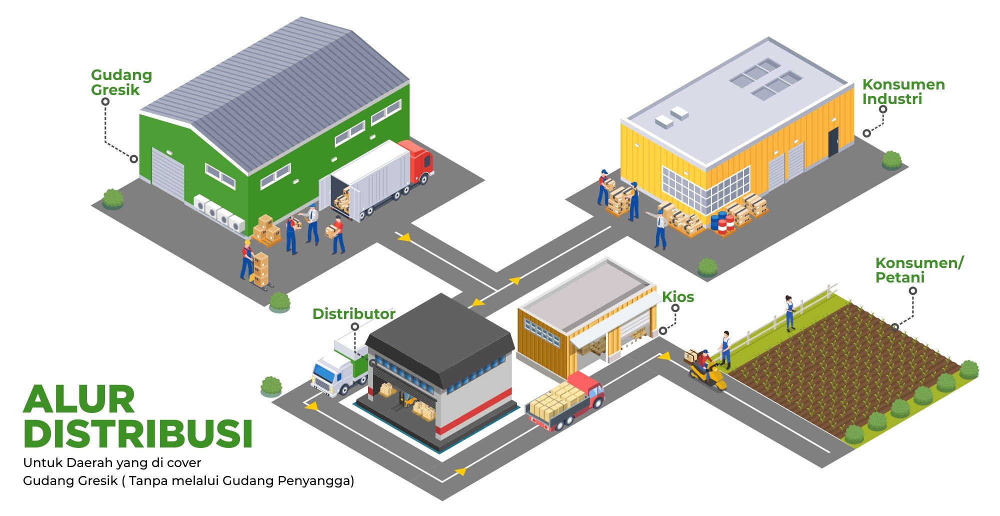
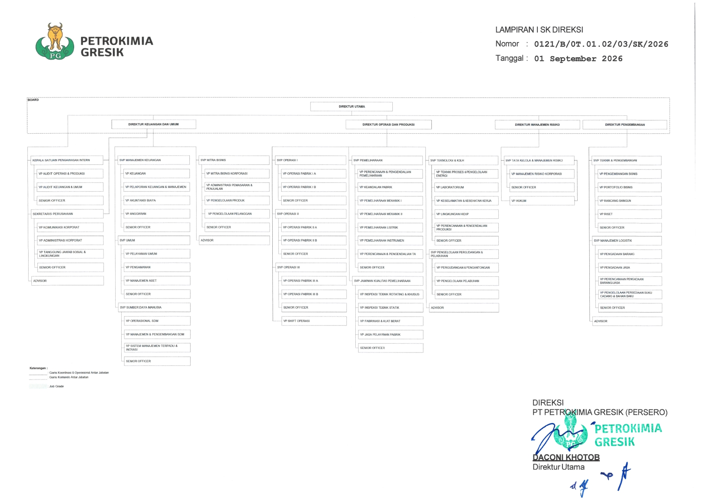

Produsen Pupuk Terlengkap di Indonesia.
Solusi Agroindustri
Sejarah Perusahaan
Gambaran Umum Perusahaan

PT Petrokimia Gresik
PT Petrokimia Gresik merupakan perusahaan yang bergerak di bidang produksi pupuk dan bahan kimia untuk mendukung sektor pertanian serta industri nasional. Berdiri sejak tahun 1972, perusahaan ini merupakan anggota holding PT Pupuk Indonesia (Persero).
Melalui fasilitas produksi yang terintegrasi, Petrokimia Gresik menghasilkan berbagai produk pupuk dan nonpupuk. Perusahaan juga berkomitmen mengembangkan inovasi dan menerapkan prinsip industri berkelanjutan untuk mendukung ketahanan pangan nasional.
- Tahun berdiri: 1972
- Lokasi: Gresik, Jawa Timur
- Bidang usaha: pupuk dan bahan kimia
Produsen Pupuk & Bahan Kimia Terlengkap di Indonesia
PT Petrokimia Gresik merupakan anggota holding PT Pupuk Indonesia (Persero) yang berkomitmen mendukung ketahanan pangan nasional melalui solusi agroindustri terpadu dan berkelanjutan.
- Mendukung pencapaian swasembada pangan nasional dengan produk pupuk berbasis riset dan formulasi terpadu.
- Menerapkan prinsip Green Industry dan manufaktur ramah lingkungan pada seluruh fasilitas produksi.
- Mengoperasikan puluhan pabrik modern berbasis otomatisasi untuk menjamin ketersediaan pupuk dan bahan kimia berkualitas tinggi.
Berdiri sejak tahun 1972, Petrokimia Gresik tidak hanya memproduksi pupuk anorganik seperti Urea, NPK, ZA, dan SP-36, tetapi juga terus berinovasi mengembangkan pupuk organik, pembenah tanah, produk hayati, serta berbagai bahan kimia industri guna menyokong kemajuan pertanian dan industri nasional.
Berita
Berita dan Informasi Perusahaan
13 Oktober 2026
Petrokimia Gresik Siapkan Stok 443 Ribu Ton Pupuk Bersubsidi
Petrokimia Gresik menyiapkan stok pupuk bersubsidi untuk mendukung kebutuhan petani menjelang musim tanam Oktober–Maret.
Baca Selengkapnya
2 Desember 2024
Petrokimia Gresik Pertahankan Rekomendasi Sertifikat ISO 37001:2016
Petrokimia Gresik mempertahankan rekomendasi sertifikasi sistem manajemen anti penyuapan sebagai bagian dari upaya memperkuat tata kelola perusahaan.
Baca SelengkapnyaPemasaran
Informasi Pemasaran PT Petrokimia Gresik

Penjelasan Layanan Penjualan
1. Penjelasan Pelayanan Penjualan Pupuk Bersubsidi
- Distributor mengajukan permintaan penebusan disertai bukti transfer pembayaran dari bank ke PT Petrokimia Gresik.
- Distributor melakukan pembayaran melalui bank.
- PT Petrokimia Gresik menerbitkan Delivery Order (DO) yang ditujukan kepada Gudang Penyangga atau Gudang Gresik, dengan tembusan kepada distributor sebagai order pengambilan pupuk.
- Distributor menghubungi Gudang Penyangga atau Gudang Gresik dengan membawa salinan DO untuk pengambilan pupuk.
- Gudang Penyangga atau Gudang Gresik melakukan verifikasi salinan DO yang dibawa distributor dengan DO yang diterima dari PT Petrokimia Gresik. Setelah dinyatakan benar, pupuk diserahkan kepada distributor.
2. Penjelasan Pelayanan Penjualan Pupuk Non Subsidi
- Transaksi dilakukan antara PT Petrokimia Gresik dengan konsumen atau distributor.
- Konsumen atau distributor melakukan pembayaran melalui transfer bank.
- PT Petrokimia Gresik menerbitkan Delivery Order (DO) untuk Gudang Gresik atau Gudang Penyangga.
- Pengambilan barang oleh konsumen dilakukan sesuai dengan term penyerahan barang (FOB/FOT).

Pusat Layanan Pelanggan
Kantor Pusat PT Petrokimia Gresik
Jl. Jend. Ahmad Yani, Gresik 61119,
Jawa Timur
Telepon bebas pulsa:
0800.1008001
WhatsApp:
0811 9918 001
Email:
konsumen@pupuk-indonesia.com
Alamat surat:
Gedung Graha Phonska, Lantai 4,
Jalan Tanah Abang III Nomor 16,
Jakarta Pusat 10160

Petromart
Petromart merupakan gerai pertanian yang menjual kebutuhan sarana produksi pertanian secara retail, mulai dari pupuk non-subsidi hingga produk pengembangan Petrokimia Gresik Grup. Produk tersebut meliputi produk hayati, benih unggul, produk olahan pangan, probiotik, dan pestisida.
Dengan tagline “Solusi Lengkap Pertanian”, Petromart juga menyediakan layanan konsultasi bagi konsumen untuk membantu memberikan solusi terhadap berbagai masalah pertanian.
Kehadiran Petromart di berbagai daerah bukan untuk berkompetisi dengan kios pertanian yang sudah ada, melainkan sebagai pelengkap dan penyuplai produk pengembangan serta produk non-subsidi ke kios-kios yang telah ada. Petromart juga menjadi upaya PT Petrokimia Gresik untuk semakin dekat dengan konsumen dan meningkatkan kualitas pelayanan.
Gerai Petromart di Jawa Timur
- Petromart Gresik: Jl. Noto Prayitno, Kecamatan Kebomas.
- Petromart Bojonegoro: Jl. Bojonegoro–Ngawi, Leran, Kecamatan Kalitidu.
- Petromart Tuban: Jl. Raya Babat–Tuban KM 40, Desa Minohorejo, Kecamatan Widang.
- Petromart Nganjuk: Jl. Tamanan No. 58, Mojorembun, Kecamatan Rejoso.

Sistem Distribusi Pupuk PT Petrokimia Gresik
Sistem distribusi PT Petrokimia Gresik dilakukan melalui dua jalur penyaluran, yaitu distribusi melalui Gudang Gresik dan distribusi melalui Gudang Penyangga. Kedua jalur tersebut bertujuan menyalurkan pupuk ke wilayah tujuan hingga sampai kepada petani.
1. Distribusi melalui Gudang Gresik
Jalur ini digunakan untuk wilayah yang dilayani langsung oleh Gudang Gresik tanpa melalui Gudang Penyangga. Pupuk disalurkan dari perusahaan menuju Gudang Gresik, kemudian diteruskan kepada distributor dan jaringan penjualan hingga sampai kepada petani.
Alur distribusi:
- PT Petrokimia Gresik sebagai produsen pupuk.
- Gudang Gresik sebagai tempat penyimpanan dan penyaluran.
- Distributor menerima pupuk untuk disalurkan ke wilayahnya.
- Kios atau pengecer menyediakan pupuk bagi petani.
- Petani sebagai pengguna akhir pupuk.
2. Distribusi melalui Gudang Penyangga
Jalur ini digunakan untuk wilayah yang dilayani melalui Gudang Penyangga. Pupuk dari PT Petrokimia Gresik disalurkan menuju Gudang Gresik, kemudian diteruskan ke Gudang Penyangga sebelum didistribusikan kepada distributor dan jaringan penjualan hingga sampai kepada petani.
Alur distribusi:
- PT Petrokimia Gresik sebagai produsen pupuk.
- Gudang Gresik sebagai titik penyaluran pupuk.
- Gudang Penyangga menyimpan dan menyalurkan pupuk ke wilayah tujuan.
- Distributor menyalurkan pupuk di wilayahnya.
- Kios atau pengecer menyediakan pupuk bagi petani.
- Petani sebagai pengguna akhir pupuk.
Produk
Produk PT Petrokimia Gresik
- Produk PT Petrokimia Gresik


Struktural Perusahaan
Direksi PT Petrokimia Gresik
Struktur Organisasi
Struktur Organisasi PT Petrokimia Gresik
Berikut merupakan struktur organisasi PT Petrokimia Gresik yang menggambarkan susunan jabatan dan hubungan koordinasi dalam perusahaan.

PT PETROKIMIA GRESIK
Kontak Kami
Alamat
Jl. Jenderal Ahmad Yani, Gresik 61119, Jawa Timur, Indonesia
Telepon
(031) 3981811, 3982100, 3982200
pg@petrokimia-gresik.com